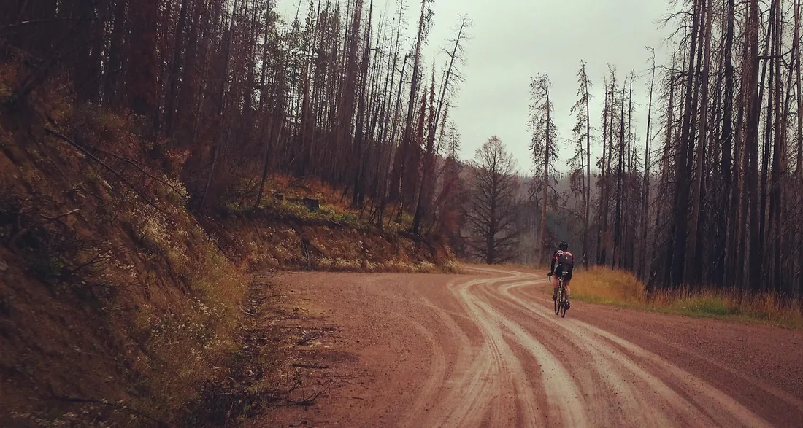
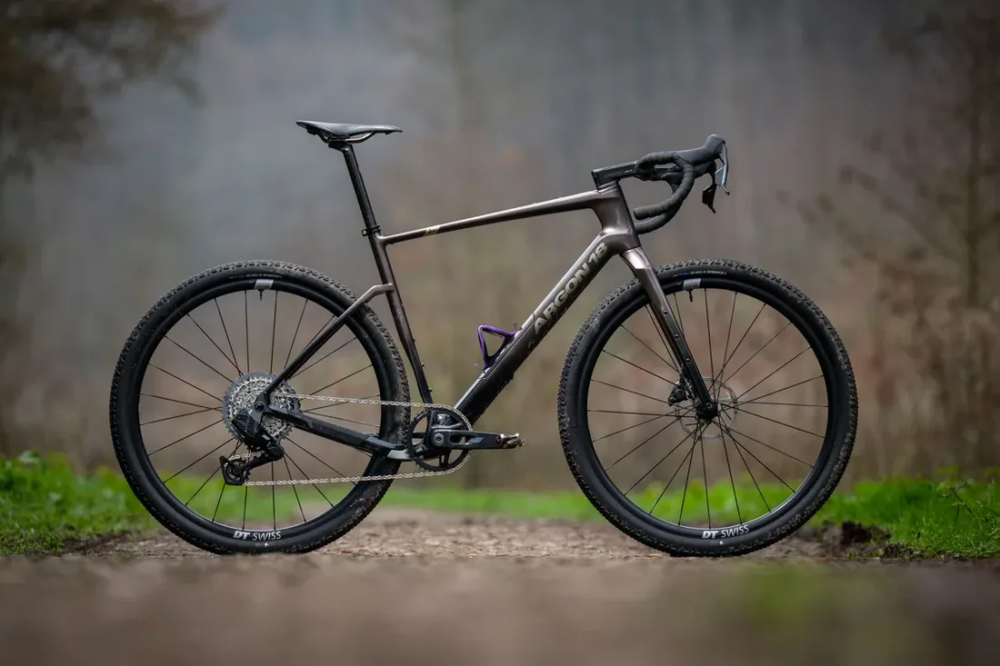
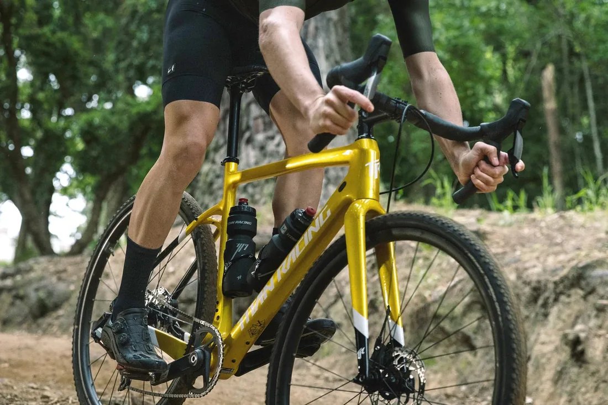
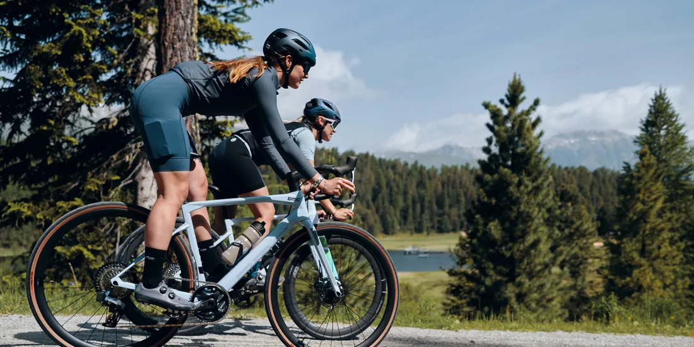

TL;DR — The Verdict
Titanium wins for long, rough, multi-day rides. Carbon wins for race-day speed and outright stiffness. The "best" frame material is the one matched to the riding you actually do — not the one Instagram tells you to want.
If you spend most of your time bikepacking, doing ultra-distance events, or riding genuinely rough terrain, the titanium frame we tested was the calmer, more forgiving, lower-maintenance tool. If your rides are fast, short, on smoother gravel, or you race seriously, carbon's stiffness and weight savings translate to real speed. Skip the "which is best" arguments online — read what each material actually did under 1,000 miles of real-world abuse below.
How We Tested

We built up two frames with matched components: same wheelset, same 45mm tires (our Rene Herse Snoqualmie test set), same drivetrain, same cockpit, same saddle, same tire pressures, same bag setup.
Frame A was a custom Moots Routt in 3Al-2.5V titanium. Frame B was a top-tier carbon gravel frameset from a major manufacturer, in its highest-end layup. Both were sized identically (same stack, reach, and effective top tube within 2mm).
Then we rode. 1,000 miles each, across the same routes, including 250 miles on genuinely punishing washboard, 400 miles of mixed gravel, 200 miles of paved transfer, and 150 miles of loaded bikepacking with our standard S24O loadout. We swapped bikes weekly to keep our perception honest.
Round 1 — Ride Quality
Winner: Titanium, but not by as much as the internet says.
"Ti rides like silk" is one of those phrases that has eaten too many forum posts. The reality is more nuanced. On smooth tarmac at moderate speed, the two frames felt almost identical. With wide tires at low pressure, the tires do far more vibration filtering than the frame material ever will.
But push into hour four of relentless washboard, and the titanium frame's edge becomes obvious. High-frequency chatter — the kind that numbs your hands and grinds at your lower back — is dampened in a way the carbon frame couldn't match. We're not talking magic, we're talking a measurable reduction in late-ride fatigue. By mile 80 on a washboard day, the carbon frame's slightly harsher feedback added up.
When Carbon Wins
On hardpack and tarmac sections under power, the carbon frame felt sharper. Out-of-saddle accelerations had a snappier response. If your gravel is "rolling country roads with occasional dirt sectors," that responsiveness matters more than long-haul compliance.
Round 2 — Weight

Winner: Carbon, clearly.
Frame-only, the titanium Moots came in around 1,550g for our size. The carbon frame came in around 950g. That's a ~600g (1.3 lb) gap that you can't engineer away. On climbs, it's noticeable. Across a long day, it's noticeable. Loaded for bikepacking with 20+ lbs of gear, it's almost lost in the noise. Pick your poison: a 600g penalty in exchange for compliance and durability, or a 600g savings at the cost of impact tolerance.
Round 3 — Durability and Damage Tolerance

Winner: Titanium, by a large margin.
This is where the conversation gets serious for bikepackers. Carbon is plenty strong in tension and compression along designed load paths, but it's poor at handling unexpected point impacts. A thrown rock from a passing truck, a fall onto a sharp boulder, a crash with the bike leaning hard against gear — these are the failure modes that haunt carbon owners on remote rides.
Titanium dents. It doesn't crack. In 1,000 miles, the titanium frame picked up exactly one small dent on the down tube from a stray rock and kept rolling, structurally unchanged. The carbon frame finished the test without damage, but a single sketchy moment near mile 600 — a hard drop onto a rock garden — would have ended the trip if it had hit the down tube. We know this because we've seen it happen to friends. Out where you can't call a shop, this matters.
Round 4 — Repairability
Winner: Titanium.
A cracked carbon frame is, for the typical rider, a totalled frame. Specialist carbon repair shops exist (Calfee, Ruckus Composites in the US), and they do excellent work, but turnaround is weeks and the repair is always somewhat localized. A bent or dented titanium frame can be straightened, cold-set, or welded by any competent ti framebuilder, and the repair is essentially permanent. For a bike you plan to keep for ten or fifteen years, that matters.
Round 5 — Cost and Resale Value
Winner: Titanium on resale; tie on entry cost.
High-end framesets in both materials run roughly $3,500–$6,000. You can find carbon for less if you accept lower layups and mass-market brands. Boutique titanium starts higher and goes higher — semi-custom and full-custom builds push past $6,000 quickly.
Resale is the surprise: a five-year-old titanium frame from a respected builder typically holds 60–70% of its original value. A five-year-old carbon frame from a mainstream brand often holds 30–40%. Buyers worry about hidden carbon damage and resin aging. Buyers do not worry about titanium aging. If you ever sell, the math swings hard.
Round 6 — Weather, Corrosion, and Maintenance
Winner: Titanium.
Titanium doesn't corrode. You can leave it raw, unpainted, in the rain, on a salty winter ride, and it doesn't care. Carbon doesn't corrode either, but its paint scratches and chips, and exposed hardware bonded into carbon can be a maintenance issue over years. For a low-fuss, leave-it-outside, ride-it-forever rig, titanium wins on the boring stuff.
Who Should Buy Titanium
- You bikepack regularly or want to.
- You ride genuinely rough terrain — washboard, chunk, broken roads.
- You want one bike for ten-plus years.
- You care about resale value or buying used.
- You ride in wet, salty, or corrosive climates.
Who Should Buy Carbon
- You race gravel seriously and watts matter.
- Your "gravel" is mostly dirt roads, hardpack, or smooth tarmac.
- You upgrade frames every few years and don't care about resale.
- You want the lightest possible build for climbing-heavy rides.
- You value snap and stiffness over compliance.
FAQ
Is titanium better than carbon for a gravel bike?
For long, rough, multi-day rides — yes, in our testing. For racing, fast group rides, or smoother gravel — no, carbon wins. There is no universal answer.
Does titanium really ride smoother than carbon?
Yes, but the gap is smaller than internet lore suggests. Tire choice and pressure matter more than frame material. The titanium advantage shows up in hour four of a rough ride, not in the first ten minutes.
Is carbon too fragile for bikepacking?
Modern gravel carbon is not fragile in normal use. It is, however, less tolerant of point impacts than titanium. In remote terrain where a damaged frame ends the trip, that risk profile matters.
How long does a titanium gravel frame last?
Decades, realistically. Titanium does not fatigue like aluminum and has no resin to age. This is why it holds resale value better than almost any other material.
Which is more expensive?
High-end is roughly comparable. Mid-range carbon is cheaper than mid-range titanium. Custom titanium is the most expensive option in either material.
The Bottom Line

After 1,000 miles, we keep coming back to the same answer: match the frame to the ride. Titanium is the better tool for what we mostly do — long, rough, remote bikepacking — and that's where it lives in our garage. If your rides look different, your answer should look different. Don't buy a frame for the photo. Buy it for the mileage.
Next: dial in the rest of the build. Start with our gear reviews for tested bags and tires, lock down your loadout with our Bikepacking 101 protocol, then point your wheels at The Neon Divide when you're ready to suffer.